Y-AI 메이커톤 2026 · 컬쳐랜드 사전 미션
SSEOBOM
상품권, 어디서 어떻게 쓸까?
써봄(SSEOBOM)은 상품권을 어디서 사용할 수 있는지 확인하고, 실제 사용하기까지 필요한 절차를 단계별로 안내하는 상품권 이용정보 서비스입니다. 온라인·오프라인 사용처를 검색하고, 상품권 종류와 사용처에 따른 이용 방법을 한 흐름으로 확인합니다. 컬쳐랜드상품권·컬쳐캐쉬에서 시작해 교환소 상품권·스마트문상·제휴 쿠폰으로 넓혀 갈 수 있는 컬쳐랜드 앱 기능 제안입니다.
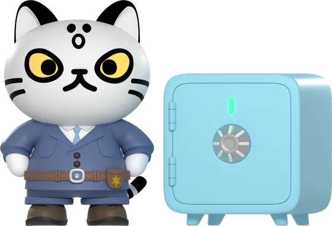
저시력·색각 이상 이용자확대·고대비로도 끝까지 쓸 수 있어야02. 주요 기능과 화면 흐름
사용처명·카테고리·자연어
온라인·오프라인 구분
충전·바코드·전환 이용 순서
결과에서 바로 사용 방법으로
02. 주요 기능과 화면 흐름 — 단계별 화면 설명
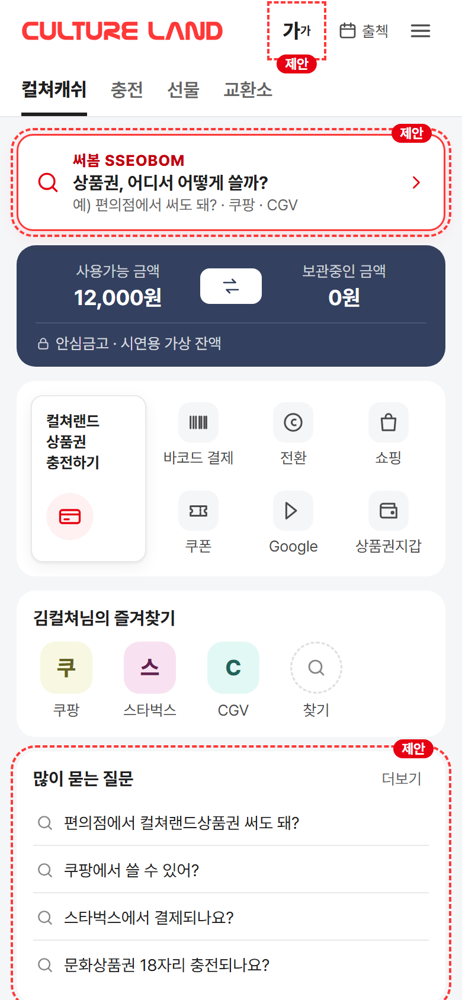
0앱 홈 진입잔액 카드 위 검색바(제안). 많이 묻는 질문에서 바로 시작
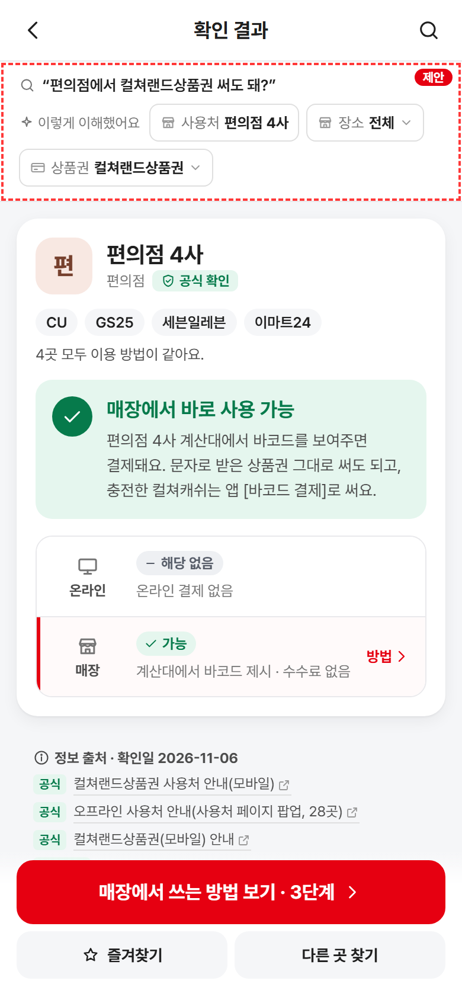
1·2해석 + 판정편의점 4사로 해석, ‘매장에서 바로 사용 가능’ · 온라인 해당 없음 · 공식 출처
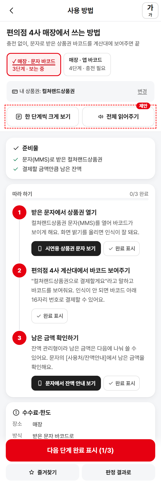
33단계 안내충전 없이 문자 바코드: 문자 열기 → 계산대 제시 → 잔액 확인. 앱 바코드(4단계)와 탭 비교
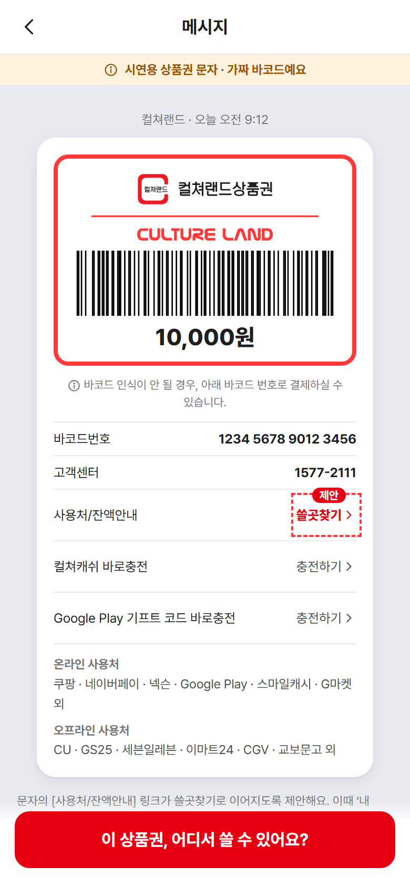
4앱 화면으로 연결[시연용 상품권 문자 보기] → 바코드 제시 → [안내로 돌아가기], 완료 체크
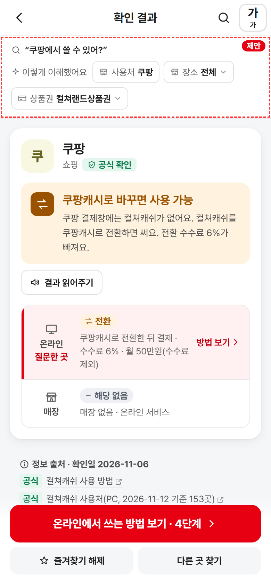
B결제창에 컬쳐캐쉬가 없는 곳“쿠팡에서 쓸 수 있어?” → 쿠팡캐시 전환(수수료 6%, 월 50만원), 수수료 계산
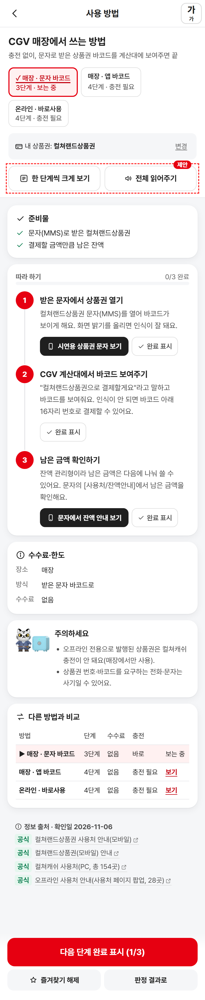
C쓰는 방법이 여러 가지일 때“CGV” → 온라인 바로사용·매장 바코드·쿠폰을 단계 수·충전 여부로 비교
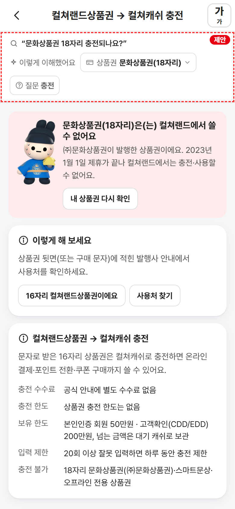
D이름이 비슷한 다른 상품권“문화상품권 18자리 충전되나요?” → 안 되는 이유(발행사·제휴 종료)와 대안
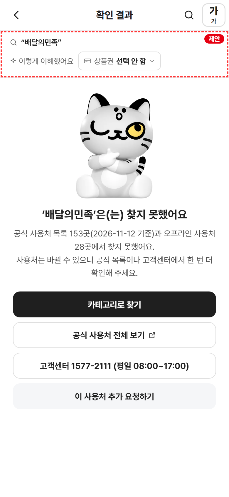
E공식 목록에 없는 곳“닌텐도”는 ‘확인 필요’, 결과가 없으면 비슷한 이름·공식 목록·고객센터 안내
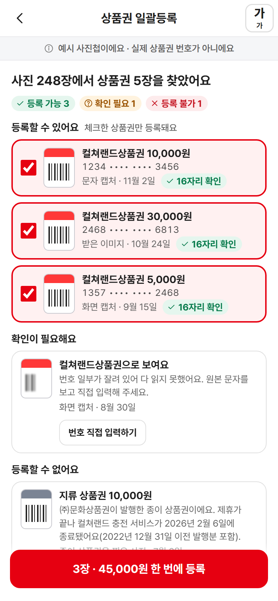
P상품권이 사진첩에 흩어져 있을 때사진에서 상품권을 찾아 확인한 것만 한 번에 등록 → “어디서 쓸까요?”로 연결
03. 누구라도 — 저시력·색각 이상 이용자를 위한 써봄
시각장애라고 하면 전맹을 먼저 떠올리지만, 시각장애인의 대부분은 시력이 일부 남은 저시력입니다(WHO 2010 추정: 시각장애 2억 8,500만 명 중 저시력 2억 4,600만 명, 약 86%). 누구나 선물로 받는 상품권이라면, 화면을 확대하거나 고대비로 보는 이용자도 같은 흐름으로 끝까지 쓸 수 있어야 합니다.
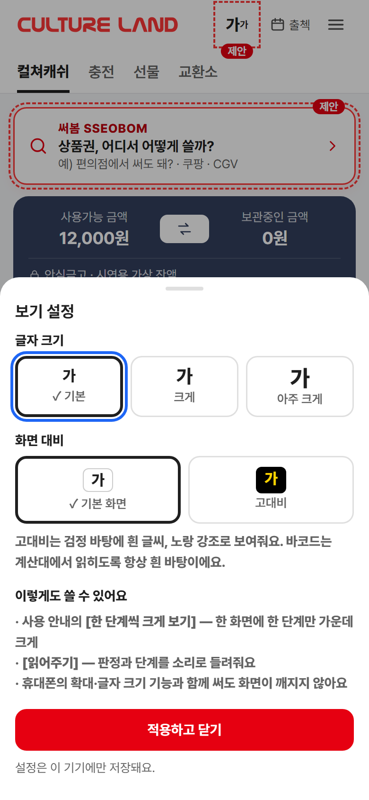
① [가] 보기 설정모든 화면 상단 · 글자 3단계 · 고대비 · 기기 설정 자동 반영
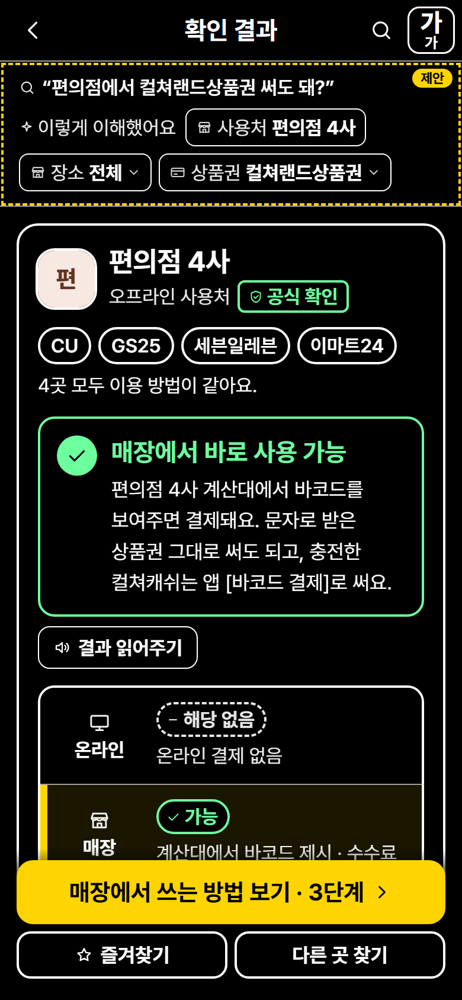
② 고대비 + 큰 글자 결과검정·흰·노랑, 판정은 색+모양+글자 · 결과 읽어주기
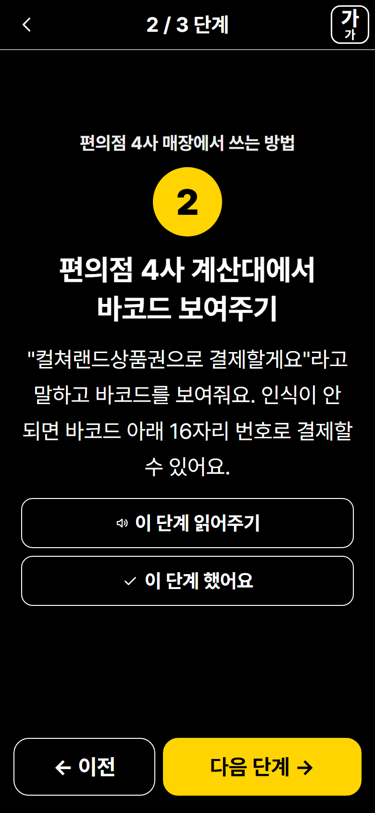
③ 한 단계씩 크게 보기한 화면에 한 단계 · 가운데 배치 · 큰 이전/다음
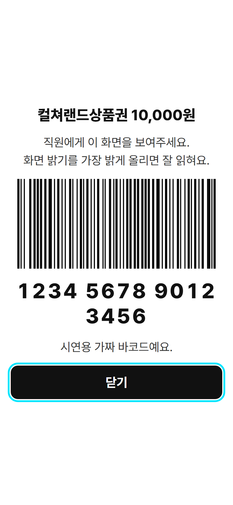
④ 바코드 크게 보여주기계산대에 그대로 내밀기 · 큰 숫자 · 항상 흰 바탕
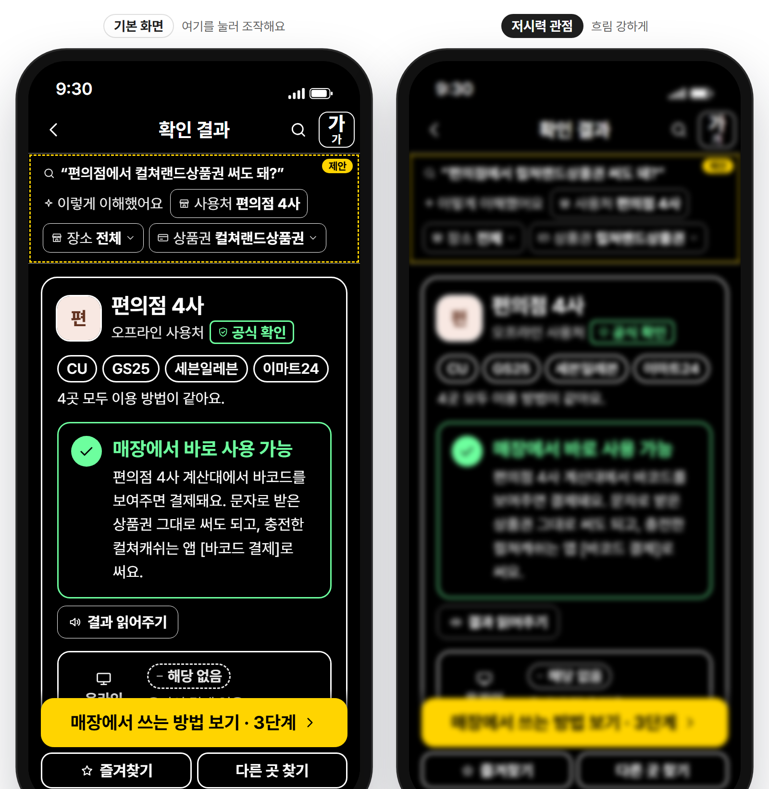
⑤ 저시력 관점 나란히 보기시연 페이지에서 체크하면 같은 화면을 흐림·시야·색각 시뮬레이션으로 옆에 표시
| 유형 (NAX 저시력 체험 기준) | 어려움 | 써봄의 대응 |
|---|---|---|
| 시력저하 | 교정해도 흐릿하게 보임 | 글자 3단계(최대 150%) · 최소 13px · 바코드 크게 · 읽어주기 |
| 시야장애 | 시야 일부만 보임(양이측 반맹·터널 시야) | 한 단계씩 크게 보기 — 정보를 가운데로 모으고 큰 버튼 |
| 적록 색각 이상 | 빨강과 초록 구분이 어려움 | 판정 = 색 + 아이콘 모양(원·둥근 사각·사각·점선) + 글자, 선택 = 체크·밑줄 |
| 전색맹 | 색 없이 명암으로만 보임 | 고대비 테마 글자 대비 7:1 이상, 흑백에서도 상태 구분 |
색각 이상은 국내 법적 시각장애 기준(시력·시야)에는 해당하지 않지만 같은 원칙으로 함께 대응했어요. 실기기 스크린리더(VoiceOver·TalkBack) 검수는 미구현 — 컬쳐랜드 내부 적용 시 진행 권장.
0404. 앱·PC 적용 구상 · 05. AI 활용과 검증
내부 적용 시 사용처 DB에 channel·method·fee·limit·checkedAt·source 필드를 더하면 같은 판정·안내를 운영자가 관리할 수 있어요. 결제·충전·계정 연동은 컬쳐랜드 내부 개발 전제.
| 항목 | AI 초안·1차 결과 | 대조한 근거 | 수정 |
|---|---|---|---|
| 쿠팡캐시 한도 | 월 10만원(블로그) vs 월 50만원 충돌 | 공식 쿠팡캐시 전환 안내 원문 | 월 50만원·일 10회 |
| 넥슨 한도 | 월 15만원 | 넥슨 공지(2023-08 변경) | 월 20만원, 번호 직접 입력 경로 추가 |
| 카카오페이 | 전환 목록에 없음 | 앱 홈 배너 “카카오페이포인트 적립” 반례 → PC·모바일 전환 목록 재확인 | ‘확인 필요’ + 배너는 혜택 광고로 추정 명시 |
| 다이소 | 배너 “다이소 결제 OPEN” → 매장 가능 오해 | 공식 매장 사용처 28곳에 없음, 다이소몰만 확인 | 매장 ‘확인 필요’ → 다이소몰로 연결 |
| 매장 사용법 | 충전 → 앱 바코드(4단계)만 | 공식 사용처 안내 “상품권(MMS/바코드)을 제시하여 결제” | 충전 없는 문자 바코드(3단계)를 기본 경로로 |
| 저시력 기획 | 적록색맹 = “빨강↔파랑”, “시각장애인 90%” 출처 없음 | 색각 이상 정의, WHO 2010 추정, 법적 시각장애 기준 | 빨강↔초록, 출처 단 수치(약 86%), ‘색각 이상’으로 구분 |
| ‘문화상품권’ | 해석기가 18자리로 단정 | 16자리 옛 이름 ‘모바일문화상품권’ | 모호하면 자릿수 다시 묻기 |
| 해석기 | “쿠팡캐시로 전환” 미인식, ‘ㅋㅍ’ 오매칭 | 자동 테스트 실패 2건 | 별칭·초성 정확일치 우선 → 91/91 |
실제 정보와 시연 데이터 구분 — 사용처·수수료·한도·절차는 공식 확인 정보(data/merchants.js 등, 항목마다 출처·확인일·신뢰도). 잔액·바코드·상품권 번호·회원 이름은 가상 시연 데이터(data/demo.js)로 분리하고 화면에 ‘시연용’ 띠를 붙였어요. 개인정보·실제 PIN·API 키는 쓰지 않았어요.